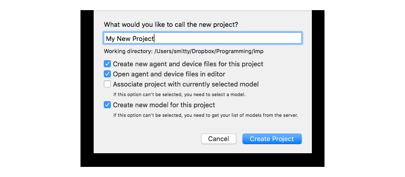
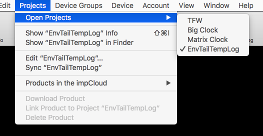
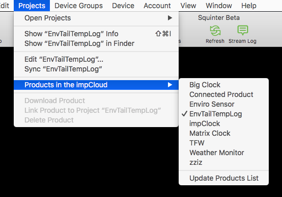

Squinter 2.0 Beta“A Squirrel Integrator”
Contents |
- Working With Projects and Products
- Working With Device Groups
- Working With Devices
- Including Libraries In Your Code
- Debugging Code
- Configuring Squinter
Working With Projects and Products
Squinter works with Projects, each of which is stored as a project file on disk. Projects record which agent
and device code files comprise a given model, and which external libraries and files, and Electric Imp libraries
they use. Project files are identified by the .squirrelproj file extension. Squinter lets you
create new projects, either from scratch or from existing Products in the Electric Imp impCloud.

Projects are listed in the ‘Open Projects’ submenu in the ‘Projects’ menu, which also presents actions you can perform with the currently selected project. You can also select a project from the ‘Current Project’ popup in Squinter’s main window.
New projects are saved initially to Squinter’s working directory, which you can set in the Preferences. To create a new Project, click on appropriate toolbar button or select the relevant option from the ‘Files’ menu. This menu also lists recently opened projects — as does Squinter’s dock icon. You can also save your current Project to a new file if you wish.

The ‘Projects’ menu also presents a list of Products associated with your Electric Imp account in the impCloud. Each Project maintains a one-to-one mapping with a uniquely named Product. New Projects are uploaded to the impCloud as Products, and existing Products can be downloaded as Projects, complete with any Device Groups they contain.

Squinter also allows you to perform tasks on a selected Product, including linking it to an existing project, or deleting it from the impCloud. Only Products that contain Device Groups with no assigned devices (or no Device Groups at all) can be deleted.